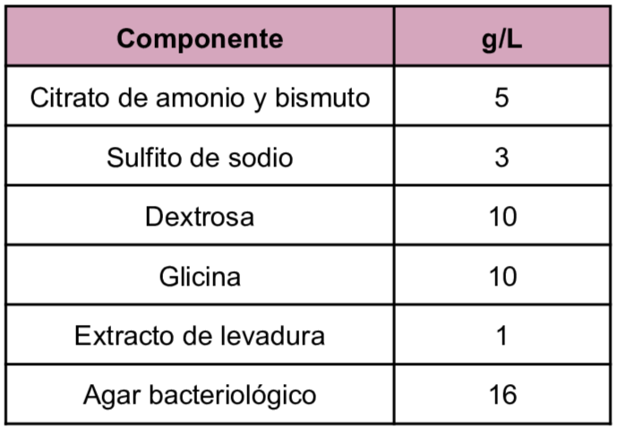
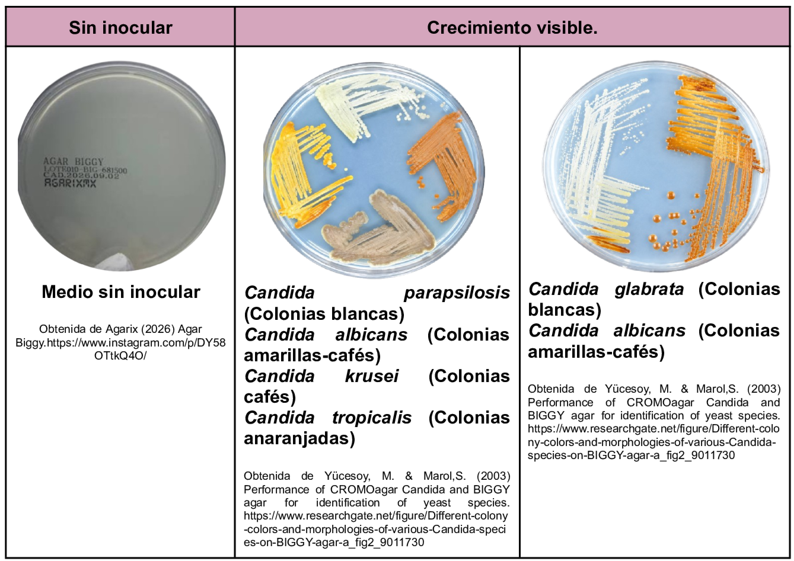

El medio Bismuth Glucose Glycine Yeast es utilizado en el aislamiento y diferenciación de levaduras del género
Candida.
La diferenciación de las levaduras se realiza en base a la morfología colonial y a la pigmentación del medio. Entre los componentes del medio se encuentra la glicina que permite la estimulación del crecimiento y la inhibición de ciertas bacterias, la dextrosa es el carbohidrato fermentable, el citrato de amonio, bismuto y sulfito de sodio actúan como inhibidores del desarrollo bacteriano.
Composición

pH a 25°C 7.4±0.2
Resultados Posibles
Las diversas especies de
Candida
reducen la Sal de Bismuto a Bismuto y el Sulfito a Sulfuro, los cuales, al conjuntarse se genera un precipitado de negro a café.
Candida albicans:
Colonias circulares con borde micelial y coloración marrón oscuro o negro.
Candida tropicalis:
Colonias pequeñas marrón oscuro y con centro negro. Después de 72 hrs presentan brillo metálico alrededor de las colonias y difunde pigmento en el medio.
Candida krusei:
Colonias circulares con borde micelial y coloración marrón oscuro o negro.

Referencias
MCD Lab (2025) Agar Biggy/ Agar sangre/ Agar MacConkey. https://mcd.com.mx/index.php?controller=attachment&id_attachment=26785